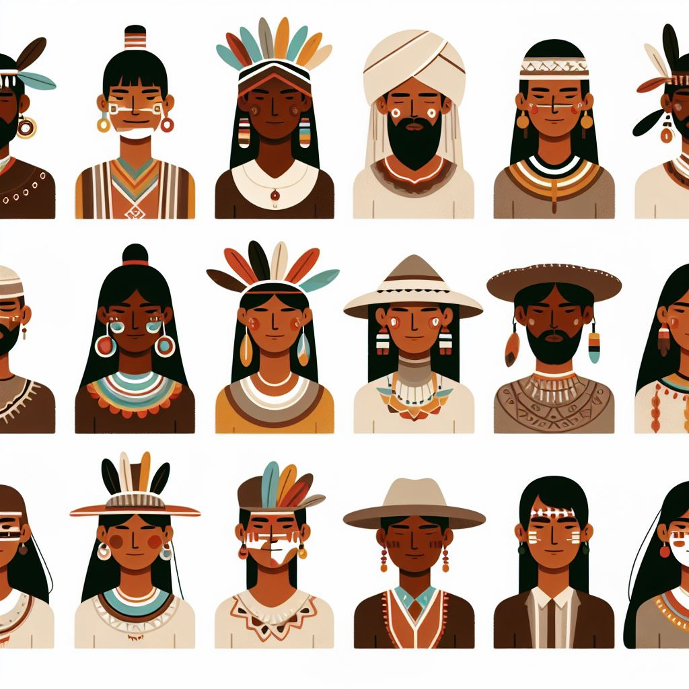
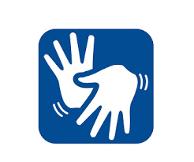
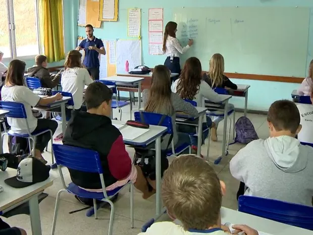

Derechos lingüísticos
en Brasil
Panorama de los derechos lingüísticos en Brasil
Derechos Lingüísticos
En Brasil, los derechos lingüísticos están intrínsecamente vinculados a la diversidad de lenguas habladas en el país, con un enfoque especial en las lenguas indígenas y en la Lengua Brasileña de Señas (Libras). Comprenden diversas dimensiones fundamentales, entre las cuales podemos destacar:

Las lenguas indígenas son oficialmente reconocidas y protegidas por la Constitución brasileña. Los pueblos indígenas tienen el derecho de utilizar sus lenguas en contextos educativos, administrativos y culturales, según lo establecido en la Ley n.º 9.394/1996 y en la Ley n.º 11.645/2008, que hace obligatorio enseñar la historia y cultura indígena en las escuelas.
La Lengua Brasileña de Señas (Libras), utilizada por la comunidad sorda en Brasil, está legalmente reconocida como un medio de comunicación y expresión mediante la Ley n.º 10.436/2002, reglamentada por el Decreto 5.626/2005.
En el contexto de los pueblos indígenas, existen escuelas bilingües que enseñan tanto en las lenguas indígenas como en portugués, así como en la lengua de señas (Libras) y portugués. Esto desempeña un papel crucial en la preservación de las lenguas en cuestión.
A título de información, actualmente, lenguas de origen migratorio como el talian, pomerano y hunrisqueano son consideradas por el IPHAN como patrimonio cultural inmaterial brasileño. Esta medida es importante para fortalecer la preservación, investigación y enseñanza de estas lenguas. Sin embargo, las medidas adoptadas para la enseñanza carecen de un sistema único de apoyo en el país.